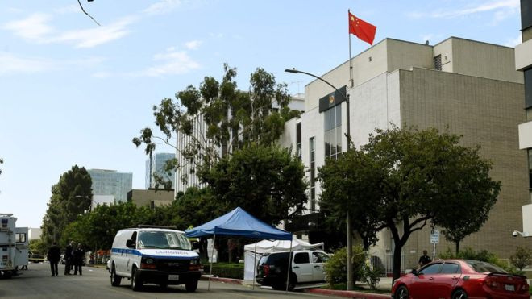
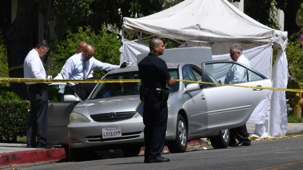
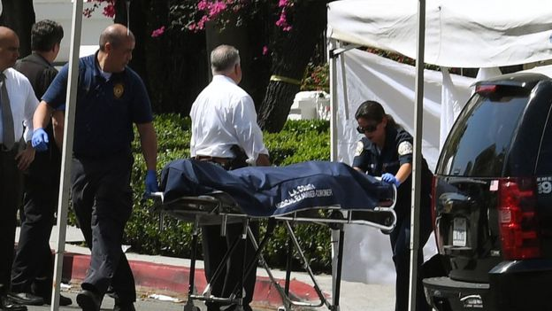

洛杉矶警局:中国总领馆袭击者为亚裔男子 年龄名字不明
文章来源:http://www.bbc.com/zhongwen/simp/world-40798996
发稿日期:2017/8/2

(AFP)
中国驻美国洛杉矶总领事馆周二（8月1日）早上发生一宗枪击案，一名亚裔男子在领馆门外前扫射多枪，然后吞枪自杀。
洛杉矶警局发言人对BBC中文网说，现时只确定枪手为亚裔男子，未知道他的年龄、名字。
“他们（到场时）在车厢中找到一名亚裔男子，有自己造成的枪伤。当场被证实死亡，这就是我们现知的事实。”
“案件调查仍然在进行中。”
当地媒体：枪手为华裔男子

(AFP)
根据《星岛日报》报道，枪手为一名60多岁的华裔男子，他驾驶一辆银灰色丰田凯美瑞，在领事馆门外扫射多枪。
报道指，现场可见最少有七枚子弹从玻璃窗射入，而另外有几枚子弹打在外墙及门牌。
《侨报网》报道指，枪手一共发射18枚子弹。
总领馆：严重关切事件

枪手现场证实死亡(AFP)
中国总领馆发表声明指极度关注事件。
“今天发生了不明枪手枪击我总领馆事件，我们对此表示严重关切，已要求美方采取一切必要措施，确保总领馆办公地点和外交人员安全，同时，尽快查明有关事件的具体情况。”